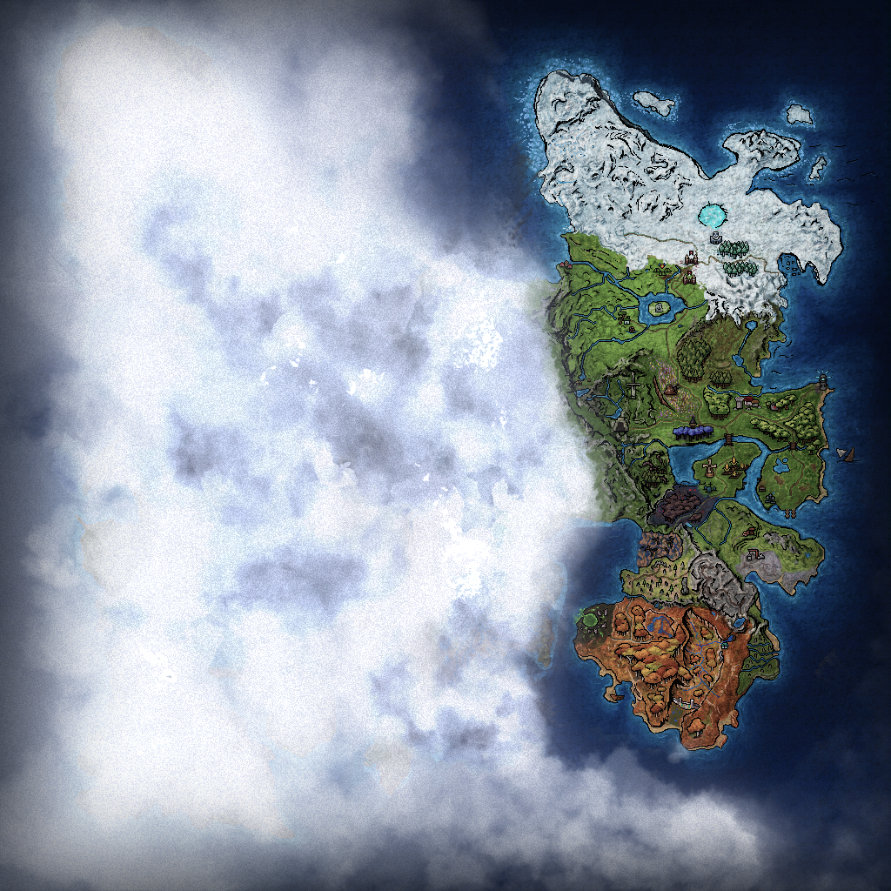
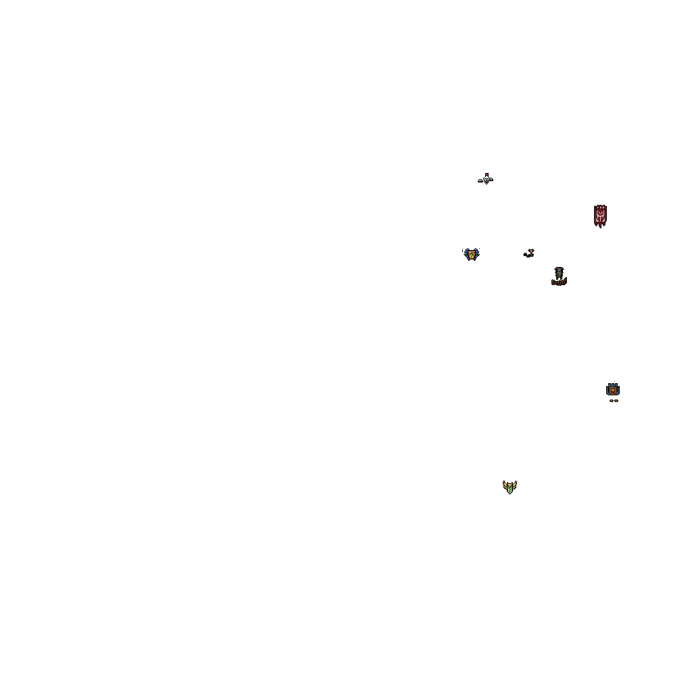

Leont
Greenwood Cover
Osgul
Willowbrook
Solendris
Frostborne Village
Dunnock Hills
wheel = zoom · drag = pan
merchanttrainerbankerartisanstablebrokermisc
Map artwork © Hiddentree Entertainment Inc. — fan-made map for
Adrullan Online Adventures, documentation purposes only. NPC positions
observed from in-game traffic.